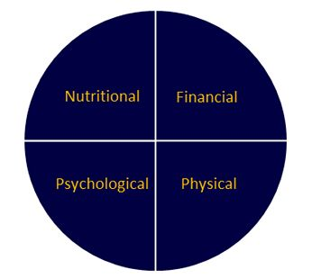
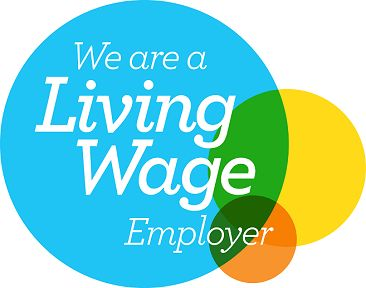
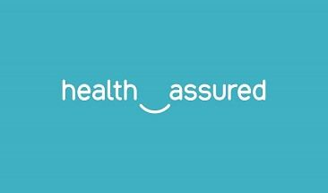
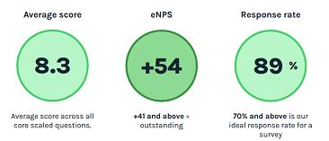

Supporting the Wellbeing of our Employee-Owners
Our Employees
Here at WCF the health, safety, and wellbeing of our employee-owners is paramount. For our businesses to perform well, and for each employee-owner to achieve their full potential, we ensure that our workspaces are physically and psychologically safe environments.
We need our employee-owners to play their part in ensuring WCF is a great place to work, and that they enjoy the work that they do in interesting, fulfilling and meaningful roles. In return, we ensure the highest standards of health, safety and wellbeing for our people, we value and champion diversity, and we continuously review our wellbeing initiatives, helping all our employee-owners to thrive.
Our wellbeing initiatives cover 4 key areas, those being:

Financial Wellbeing
Employee-Ownership Benefits – We are proud of our employee-ownership model, and the financial benefit this provides for our employee owners, allowing them to benefit financially from our successes. All colleagues have a personal stake in our business and can choose to participate in various tax efficient share save schemes during their time with us. In addition, employee-owners are issued free shares when we reach our targets and receive an annual cash Employee Ownership Dividend as a % of our profits. This is over and above any discretionary individual performance related bonus payments they may receive.
A "Real Living Wage" Employer – we are an accredited ‘Real Living Wage’ employer. This was an important measure taken for our employee-owners who choose to work for us, ensuring all colleagues, no matter their role or location, receive a fair day’s pay for a fair day’s work in line with the true cost of living. In addition to our real-living-wage commitments, we continuously benchmark our salaries and benefits in line with industry, market, and geographical trends to ensure we remain an ‘employer of choice’ for our people. All our employee owners have a defined basic level of contracted hours so that they know where they stand should overtime not be available.

WCF Family Discounts - A real privilege of working for WCF is our ability to benefit personally from our diverse portfolio of products and services. Whether that is substantially discounted stays at our camping and glamping sites, generously discounted pet supplies, considerable discounted clothing or favourably-priced-fuel, our employee-owners, and their immediate families, are taken care of. For example, during off-peak times (i.e., outside of school holidays) our employee-owners can enjoy a stay at our one of our 5-star camping and glamping sites at discounted rates. What better way to support our people financially while they enjoy some well-earned rest?
"WCF Rewards" - Our employee-owners enjoy their very own rewards platform, “WCF Rewards”. Built with our people in mind, the platform includes access to 800+ discounts and deals at favourite high-street shops, supermarkets, restaurants and cinemas - helping to make our owner’s money go that little bit further. With 'Instant Vouchers', 'Reloadable Cards' and 'Cash-back' options on offer, there is something for everyone. On average, there is a discount of 4-7% on most supermarket retailers, helping with monthly grocery spend as well as other discounts and cashback options on other household utilities such as energy, broadband, TV packages and insurances. We also top up their account for birthdays and at Christmas as an additional gift.
As well as discounts and cashback offers, WCF Rewards includes access to expert guides, tips and tools to help our owners manage their money better and improve their financial wellbeing. Resources include but not limited to, ‘Budgeting & Spending’, ‘Credit & Borrowing’, ‘Savings and Investments’, ‘Retirement’, and ‘Money Tools’.
WCF’s ‘Employee Financial Wellbeing Programme’ ("EFWP") – WCF’s “EFWP” is available to all employee-owners, supporting with an unforeseen event or emergency. Payments made through the scheme are interest free and repayable in equal instalments to a payment plan suitable to the individual, ensuring lending or repayment does not cause undue ongoing financial hardship.
Winter Relief Resources – In light of the current economic climate, we continuously consider what support we can provide for our employee-owners, and one of our most recent initiatives has been providing free-of-charge food provisions and sanitary products at all of our 30 locations across the UK. This support is helping our colleagues who may be feeling the pinch due to the cost of living. Inside our kitchen cupboards our employee-owners will find food to make a hot meal, and sanitary items in our toilet facilities, which can be used without restriction, as and when needed. In addition, we made a cost-of-living payment of £750 per FTE to every one of our employee owners in April 2022.
Life Insurance – As an employee-owner of WCF, colleagues can nominate a beneficiary of their choosing to receive a lump sum (3x annual salary), in the unfortunate event they die whilst in our employment. Eligibility is immediate upon commencement, providing comfort and support to our owner’s loved ones should the worse happen.
‘Great People Know Great People’ Referral Scheme – Recruiting ‘Great People’ for our business is of the upmost importance to us here at WCF. By attracting and retaining committed and inspiring employees we continue to grow our business, ensure we remain a great place to work, as well as maintain and enhance our excellent customer experience. As employee-owners and WCF ambassadors, our colleagues are best placed to inform us of exceptional individuals who align with our ‘Guiding Principles’. In recognition of a successful referral, an employee-owner receives a £750 gross bonus payment as part of this scheme as soon as a candidate is successfully recruited. In the past 8 months, 13 successful referrals have resulted in bonus payments for our people.
Pension Entitlements – We ensure that all colleagues have access to a reputable pension scheme, allowing them to benefit from employer contribution in accordance with their contractual terms.
Psychological Wellbeing
Employee Assistance Programme (“EAP”) – Our EAP is designed to help our employee-owners with issues that could be affecting their home, their work life, their health and their general wellbeing. WCF have partnered with a third partner provider, ‘Health Assured’, to provide a complete support network which offers expert advice, compassion, and guidance, 24/7. Our employee-owners and their immediate families can benefit from free confidential support whenever they need it. The service includes structured counselling, financial, legal, and bereavement support by trained professionals. In addition, we provide bespoke, specialised access to counsellors and other specialists, paid for by the company, if individual needs require it.

Mental Health First Aiders – The role of a Mental Health First Aider is to be a point of contact for an employee who is experiencing a mental health issue or emotional distress. This interaction could range from having an initial conversation through to supporting the person to get appropriate help. As well as in a crisis, Mental Health First Aiders provide intervention help for someone who may be developing a mental health issue. As part of our wellbeing strategies, we have so far funded the training of 13 Mental Health First Aiders, spread geographically across the UK, to provide invaluable support to our people. This training has helped to equip our Mental Health First Aider’s with the practical skills needed to respond and spot the signs and symptoms of mental health concerns.
Psychological wellbeing resources through ‘WCF Rewards’ – As part of WCF Rewards, our employee-owners will find a collection of mindfulness audios, articles, and tips to help reduce stress, improve psychological wellbeing, and help to achieve better sleep. Our colleagues are also good at sharing their thoughts and tips through our employee engagement app to help others.
Championing Employee Voice - Continuous feedback from our employee-owners is critical for the continued success and growth of our business, as well as maintaining, and improving the employee experience for all members of the WCF Family. To support with this, we partner with a third-partner provider ‘HIVE’, an independent platform used to gather the views and opinions of our owners confidentially, and on a continuous basis. The ‘HIVE’ technology allows us to gather and respond to our people in a timely manner and helps us to collaboratively drive real change for the benefit of us all. With the help of ‘HIVE’ we explore our findings and benchmark our overall eNPS (“employee net promotor score”) with external organisations, allowing us to nurture what we do well, as well as strive to improve our lower scoring categories. We are proud of our ‘OUTSTANDING’ results (according to external benchmarking) from our 2022 efforts and commit to working collaboratively with our owners to ensure their voice is continuously heard.

Training & Development Opportunities- We are committed to the continuous learning and development of all of our employee-owners, allowing each person the opportunity to realise their full potential. We do this by ensuring equal opportunities and access to training pertinent to each job role, allowing for personal and professional growth. Leadership training is an integral part of ensuring our colleagues remains engaged, innovative and curious, whilst enabling our businesses to develop a diverse pipeline of successors for key roles and leadership positions for our future. Since 2020, we have proudly supported 45 leaders to undertake leadership programmes, gaining insight from world-renowned expert speakers, whilst collaborating with their colleagues and developing invaluable leadership skills. These programs have also allowed colleagues to collaborate across our individual businesses, and with others, and develop meaningful relationships outside of their immediate workplace.
Flexible Working– We promote equality and inclusion for all which includes the opportunity to explore flexible working arrangements. Whether that is part time working, compressed hours, or hybrid working, we commit to exploring how this can be achieved for our employee-owners and our business. Walking meetings are encouraged where possible to allow our employee owners to benefit from a change in scenery.
Physical Wellbeing
Cycle to Work Scheme- For our employee-owners looking to incorporate fitness into their daily commute, we partner with “Cycle Scheme”, to offer discounted bicycles and equipment for all cycling needs. Purchases are made by WCF on behalf of our employees and repayments are made via salary sacrifice arrangements. This initiative helps our employee-owners save money, invest in their wellbeing, as well as supporting a greener planet. We also offer secure bike storage at several of our sites.
Physical wellbeing resources through ‘WCF Rewards’ - As part of ‘WCF Rewards’, our employee-owners have access to a wide range of online fitness videos, accessible whenever and wherever they choose. The videos on offer help our owners meet their fitness goals, whatever their aim or fitness level.
Along with online resources, WCF Rewards offers great savings for our colleagues on health and fitness facilities across the UK.
Nutritional
Access to nutritional wellbeing resources through ‘WCF Rewards’ - As part of ‘WCF Rewards’, our employee-owners have access to a vast collection of deliciously simple recipes as well as nutritional advice and guidance. This includes, both old and new culinary delights, quick and easy recipes, healthy low-calorie options as well as family-friendly favourites. Powered by ‘Hello Fresh’ there is something for everyone.
Supporting the wellbeing of our employee-owners…. That’s the WCF Way.
< Previous Article WCF Fuels North West victorious at Red Rose Awards 2023